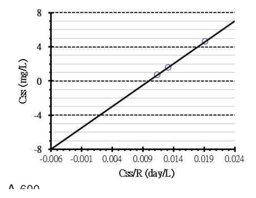

開卷有益 ／
藥師 ／ 藥劑學與生物藥劑學 ／ 107 年第 2 次107 年第 2 次藥師藥劑學與生物藥劑學試題與答案
這一頁是民國 107 年第 2 次藥師藥劑學與生物藥劑學的整份歷屆試題，共 80 題，題目與標準答案出自考選部「國家考試試題及測驗式試題答案」開放資料，其中 74 題附有詳解。以下逐題列出題幹、選項與答案；要計時作答或記錄成績，請用線上練習。
考選部原始場次代碼：107100
線上作答這一科 →
全部 80 題
第 1 題
利用Q10方法估算架儲期時，假設Q值為3，若有一藥物溶液在5℃時的架儲期為120小時，將此藥物於35℃存 放時的架儲期為多少小時？
（A） 1.5（B） 4.4（C） 13.3（D） 40.0答案：（B）
詳解與考點 正解：Q10 = 3 表示溫度每升高 10℃，降解速率變為 3 倍，而架儲期與速率成反比。先算溫差：35℃ - 5℃ = 30℃，共有 30℃ / 10℃ = 3 個溫度區間；速率比為 3^3 = 27。故 35℃ 的架儲期 = 120 h / 27 = 4.44 h，約為 4.4 小時，故選 B。
A：1.5 小時約等於 120 h / 3^4，是把 30℃ 的溫差誤算成 4 個 10℃ 區間。
C：13.3 小時約等於 120 h / 3^2，只計入 2 個溫度區間，少算一次加速。
D：40.0 小時等於 120 h / 3，只按單一 10℃ 區間換算，與題目的 30℃ 溫差不符。
本題考點：Q10 法（Q10 method）——溫差先除以 10℃ 取得指數，再以 Q10 的該次方求速率倍率；加速安定性與架儲期（accelerated stability and shelf life）——在同一失效標準下，架儲期與降解速率成反比，速率增加幾倍就以相同倍率縮短。
第 2 題
下列何者表示之重量最重？
（A） 0.02 kg（B） 0.1 pound（C） 1 ounce（D） 50 grain答案：（B）
詳解與考點 正解：比較重量必先統一成 g。0.02 kg = 20 g；0.1 pound = 0.1 × 453.6 g = 45.36 g；1 ounce = 28.35 g；50 grain = 50 × 64.8 mg = 3,240 mg = 3.24 g。45.36 g 最大，因此（B）0.1 pound 最重，故選 B。
A：0.02 kg 換算後為 20 g，小於（B）0.1 pound 的 45.36 g。
C：1 ounce 為 28.35 g，雖大於 0.02 kg 與 50 grain，仍小於（B）0.1 pound。
D：50 grain 僅為 3.24 g；分辨關鍵在 grain 是很小的藥衡單位。
本題考點：藥衡重量換算（pharmaceutical weight conversion）——跨 kg、pound、ounce、grain 比較時，先全部換成同一單位再排序；單位量級（unit magnitude）——pound、ounce 與 grain 的差異很大，不能只比較選項前面的數字。
第 3 題
已知某藥品在水中的溶解度為5 mg/mL，其溶解度是屬於下列何種範圍？
（A） 微溶（slightly soluble）（B） 可溶（soluble）（C） 略溶（sparingly soluble）（D） 易溶（freely soluble）答案：（A）
詳解與考點 正解：溶解度分類要先換成溶解 1 g 藥物所需溶媒體積。1 g = 1,000 mg，因此所需體積 = 1,000 mg / 5 mg/mL = 200 mL；也就是 1 份藥物需約 200 份溶媒，落在微溶（slightly soluble）的 100–1,000 份範圍，故選 A。
B：可溶（soluble）約需 10–30 份溶媒，所需體積比本題的 200 份小得多。
C：略溶（sparingly soluble）約需 30–100 份溶媒，200 份已超出此範圍。
D：易溶（freely soluble）約需 1–10 份溶媒，與 5 mg/mL 所代表的溶解度不符。
本題考點：藥典溶解度敘述（pharmacopoeial solubility terms）——將 mg/mL 轉為每 1 g 溶質所需 mL 數，再對照份數區間；單位換算（mass-to-volume conversion）——先把 1 g 換成 1,000 mg，避免直接拿 5 mg/mL 與分類門檻比較。
第 4 題
有關「長葉毛地黃苷酏（digoxin elixir）」之敘述，下列何者正確？
（A） 本品通常含有約10%乙醇（B） 本品與「長葉毛地黃苷錠劑」比較，將其投藥於成人時通常比於小孩更適合（C） 本品每mL約含digoxin 100 mg（D） 「長葉毛地黃苷」錠劑之生體可用率通常優於其酏劑答案：（A）
詳解與考點 正解：digoxin elixir 是以溶媒協助溶解的口服液體製劑，本品通常含約 10% ethanol，故（A）正確，故選 A。
B：液體劑型可依需要細調體積，對小孩的給藥彈性通常較佳；把它說成通常較適合成人，忽略了這項優勢。
C：digoxin 為高效價強心苷，口服液的濃度以 μg/mL 等級表示，不會是 100 mg/mL。
D：酏劑中的 digoxin 已處於溶解狀態，生體可用率通常不低於錠劑；此敘述把兩種劑型的相對關係顛倒。
本題考點：酏劑（elixir）——以水醇性溶媒製成的澄清口服液，先看其 alcohol 與助溶特性；液體劑型的劑量調整（liquid dosage-form dosing）——兒科或需微調劑量時，能量取體積的製劑通常比固定強度錠劑便利。
第 5 題
依中華藥典，有關普維酮－碘溶液（povidone-iodine solution）之敘述，下列何者錯誤？
（A） 本品為聚乙烯砒咯酮（polyvinyl pyrrolidone）與碘（iodine）所組成之複合物（complex）（B） 含碘量應為標誌含量之85~120%（C） 常用普維酮－碘溶液之pH值應為7.0-8.5（D） 用途分類為外用藥答案：（C）
詳解與考點 正解：本題按普維酮－碘溶液的藥典規格判斷。povidone 與 iodine 的 complex 是外用製劑，本品屬酸性溶液，藥典訂其 pH 約 1.5–6.5（游離碘在鹼性條件下不安定，會歧化而失去消毒力）；（C）的 pH 7.0–8.5 已偏鹼、落在規格之外，故選 C。
A：普維酮－碘是 polyvinyl pyrrolidone 與 iodine 形成的 complex，此敘述正確。
B：含碘量為標誌含量的 85–120% 是本題所指製劑的規格範圍，敘述正確。
D：普維酮－碘溶液用於皮膚等局部處置，分類為外用藥。
本題考點：普維酮－碘（povidone-iodine）——判斷時先掌握其為 polymer–iodine complex 的外用消毒製劑；藥典規格（pharmacopoeial specification）——含量、pH 與用途都是同一品項的規格欄位，不能以一般中性溶液的直覺代替品項標準。
第 6 題
有關糖漿劑特性之敘述，下列何者錯誤？
（A） 25℃時，蔗糖之飽和水溶解度為67.9%（w/w）（B） 單糖漿貯存於4℃以下時，將會有蔗糖結晶析出（C） 糖漿劑中通常都含有約15～20%乙醇，故一般都具防腐能力（D） 濃度為15%（w/w）之蔗糖水溶液，具光學右旋性答案：（C）
詳解與考點 正解：糖漿劑的防腐主因是高濃度蔗糖降低水活性，不是通常添加 ethanol。（C）把糖漿劑一概說成含約 15–20% ethanol 並因此具防腐力，敘述錯誤，故選 C。
A：25℃ 時蔗糖飽和水溶液約為 67.9%（w/w），是糖漿配製與結晶判斷的基礎。
B：單糖漿在低溫下蔗糖溶解度下降，貯存於 4℃ 以下可能析出蔗糖結晶。
D：蔗糖溶液具有光學右旋性，15%（w/w）水溶液仍符合此性質。
本題考點：糖漿劑的自我防腐（self-preservation of syrups）——先看蔗糖濃度造成的低水活性，不把酒精視為所有糖漿的必要成分；結晶析出（sucrose crystallization）——溫度降低會減少蔗糖溶解度，飽和或近飽和製劑須留意結晶。
第 7 題
下列長鏈正脂肪酸的何種鹽類對水溶解度最佳？
（A） Al+3（B） Ca+2（C） Mg+2（D） Na+答案：（D）
詳解與考點 正解：長鏈正脂肪酸鹽的水溶性以陽離子電荷作判準。單價的（D）Na+ 鹽較易解離與水合，形成可溶性鈉皂，故選 D。
A：Al3+ 形成多價金屬脂肪酸鹽，離子間作用強，水溶性差。
B：Ca2+ 形成鈣皂，為常見的難溶性金屬皂，不能作為最佳水溶性選項。
C：Mg2+ 同樣形成難溶性鎂皂；與（D）Na+ 的差異在於陽離子為二價而非一價。
本題考點：金屬皂的溶解度（solubility of metallic soaps）——長鏈脂肪酸配一價鹼金屬時較容易形成水溶性皂，多價金屬則傾向難溶；陽離子價數（cation valence）——比較同一脂肪酸鹽時，先辨認單價與多價陽離子，不只看金屬名稱。
第 8 題
膠體質粒的電位分別以甲（Zeta電位）、乙（表面電位）與丙（電性雙層界限電位）表示之，則三者大小關係 何者正確？
（A） 甲＞乙＞丙（B） 甲＞丙＞乙（C） 乙＞丙＞甲（D） 乙＞甲＞丙答案：（D）
詳解與考點 正解：膠體粒子由表面向本體液相移動時，電位會逐漸衰減。乙為表面電位，甲為剪切面附近的 zeta potential，丙為電性雙層界限電位，因此大小為乙＞甲＞丙，即（D），故選 D。
A：甲＞乙＞丙 把 zeta potential 排在表面電位之前，與電位由表面向外衰減的方向相反。
B：甲＞丙＞乙 把表面電位排為最低，且兩個相對位置皆不符。
C：乙＞丙＞甲 雖保留乙最高，卻把丙與甲的遠近順序顛倒。
本題考點：電性雙層（electrical double layer）——由固體表面往液相外側，電位依序下降，先依位置排再記符號；ζ 電位（zeta potential）——ζ 電位位於剪切面，是分散系統電動學與穩定性判讀常用的實測電位。
第 9 題
兩種界面活性劑甲與乙之HLB值分別為6與12，將二者以甲比乙之重量比3：1的比例混合，則混合界面活性劑 之功能為下列何者？
（A） O/W乳化劑（B） W/O乳化劑（C） 濕潤劑（D） 清潔劑答案：（C）
詳解與考點 正解：混合 HLB 要做重量加權平均：HLBmix = （3 × 6 + 1 × 12）/（3 + 1）= 30/4 = 7.5。HLB 約 7–9 屬 wetting agent 範圍，因此（C）為濕潤劑，故選 C。
A：O/W 乳化劑通常需較高的 HLB，7.5 未落在其典型範圍。
B：W/O 乳化劑常見 HLB 約為 3–6，7.5 已高於此範圍。
D：清潔劑通常需要約 13–15 的較高 HLB，與本題的 7.5 不符。
本題考點：混合 HLB（mixed HLB）——依各界面活性劑的重量分率做加權平均，不可直接把兩個 HLB 取算術平均；HLB 功能區間（HLB functional ranges）——算完數值後再對照 W/O、濕潤、O/W 與清潔用途的區間。
第 10 題
已知液體甲是牛頓流體，施以15 dyne/cm2的力可產生500 sec-1的切變速率，若改施以30 dyne/cm2的力， 則切變速率應為多少sec-1？
（A） 250（B） 500（C） 750（D） 1,000答案：（D）
詳解與考點 正解：牛頓流體在溫度不變時黏度固定，切變速率與切應力成正比。施力比 = 30 dyne/cm² / 15 dyne/cm² = 2；故新的切變速率 = 2 × 500 sec^-1 = 1,000 sec^-1，即（D），故選 D。
A：250 sec^-1 是原切變速率的一半，等同誤把切變速率當成與切應力成反比。
B：500 sec^-1 忽略了切應力已由 15 dyne/cm² 加倍為 30 dyne/cm²。
C：750 sec^-1 只增加 50%，但題目中的切應力增加 100%，不符合線性比例。
本題考點：牛頓流動（Newtonian flow）——黏度固定時，切應力加倍會使切變速率等比例加倍；切變速率與切應力（shear rate and shear stress）——先求兩次切應力的比值，再乘原切變速率，可避免直接以數值相加。
第 11 題
下列何種界面活性劑是藉由與微生物細胞膜發生陽離子交換而具有抑菌活性？
（A） sodium dodecyl sulfate（B） dodecyl-β-alanine（C） benzalkonium chloride（D） polyoxyl 40 stearate答案：（C）
詳解與考點 正解：benzalkonium chloride 是季銨鹽型陽離子界面活性劑；其帶正電的親水端會與帶負電的微生物細胞膜成分作用，並以陽離子交換與膜破壞造成抑菌活性，故選 C。
A：sodium dodecyl sulfate 為陰離子界面活性劑，親水端帶負電，並非藉陽離子與細胞膜交換而發揮抑菌作用。
B：dodecyl-β-alanine 屬兩性界面活性劑，電荷特性不等同於季銨鹽的固定陽離子頭部；分辨關鍵在其親水端不是永久帶正電。
D：polyoxyl 40 stearate 為非離子界面活性劑，沒有可進行陽離子交換的帶正電親水基。
本題考點：陽離子界面活性劑（cationic surfactants）——看到季銨鹽結構時，判斷其可藉帶正電頭部吸附並擾亂微生物膜；界面活性劑分類（surfactant classification）——以親水端的電荷區分陰離子、陽離子、兩性與非離子型，不能只看長鏈烴基。
第 12 題
預製備懸浮液（顆粒直徑為18 µm，密度為2.25 mg/mL），當懸浮於glycerin（密度1.25 mg/mL，黏度490 cp）時，沉降速率為何？
（A） 2.0×10-6 cm/s（B） 1.44×10-4 cm/s（C） 3.6×10-5 cm/s（D） 2.0×10-7 cm/s本題送分，無標準答案
第 13 題
有關乳劑之變化，下列何者為不可逆反應？
（A） o/w分層（B） w/o分層（C） 聚合（aggregation）（D） 合併（coalescence）答案：（D）
詳解與考點 正解：乳劑變化是否可逆，關鍵在液滴是否仍保有原本的界面。合併（coalescence）是相鄰液滴的界面膜破裂後真正融合成較大液滴，原有液滴數與粒徑分布已改變，無法靠振搖恢復，故選 D。
A、B：o/w 分層與 w/o 分層若仍只是乳滴上浮或下沉所致的分層，液滴界面尚未破壞，重新振搖可使其再分散；兩者差別僅在連續相與分散相相反。
C：聚合（aggregation）時液滴只是鬆散聚集，個別液滴仍存在，分散後可回復，與界面破裂的合併不同。
本題考點：乳劑不安定性（emulsion instability）——先判斷液滴是否僅重新分布或已融合，前者通常可逆、後者不可逆；合併（coalescence）——界面膜破裂並形成大液滴時，即使外觀先表現為分層，也不能以振搖當作復原。
第 14 題
某軟膏在切應力分別為5, 10, 15, 20 dyne/cm2下，切變速率分別為10, 20, 30, 40 sec-1，則此軟膏為下列何 種特性？
（A） elastic（B） Newtonian（C） pseudoplastic（D） dilatant答案：（B）
詳解與考點 正解：判準是切應力與切變速率之比是否固定。各組表觀黏度依序為 5/10 = 0.5、10/20 = 0.5、15/30 = 0.5、20/40 = 0.5 dyne·s/cm²；切變速率提高時黏度不變，表示切應力與切變速率呈正比，故選 B。
A：elastic 描述材料在受力後儲存能量並回復形狀的性質，需由卸載後的回復或時間相依行為判斷，不能由本題的固定黏度比值推出。
C：pseudoplastic 流體的表觀黏度會隨切變速率上升而下降；本題各組比值相同，沒有剪切變稀。
D：dilatant 流體的表觀黏度會隨切變速率上升而增加；本題也沒有剪切增稠。
本題考點：牛頓流體（Newtonian flow）——以 η = τ/γ̇ 檢查多組數據，η 恆定即為牛頓流動；假塑性流動（pseudoplastic flow）——切變速率上升而 η 下降時才判為剪切變稀；脹塑性流動（dilatant flow）——切變速率上升而 η 上升時才判為剪切增稠。
第 15 題
利用滲透壓儀器測量，以π/C為縱軸對溶質濃度（C）作圖時，截距相同而斜率越大者，代表溶質與溶媒的：
（A） 吸引力越大（B） 吸引力越小（C） 排斥力越大（D） 排斥力與吸引力相等答案：（A）
詳解與考點 正解：滲透壓的維里式可寫為 π/C = RT（1/M + A2C + 高次項）。截距相同表示 1/M 相同，而斜率由第二維里係數 A2 反映；斜率越大代表溶媒越有利於溶質分散，亦即溶質與溶媒的吸引力越大，故選 A。
B：吸引力越小會使溶媒品質變差，與斜率增大的判讀方向相反。
C：排斥力可使人聯想到第二維里係數的正值，但題目限定比較的是溶質與溶媒的作用；在相同截距下，斜率增大所代表的是較強的溶質－溶媒親和。
D：排斥力與吸引力相等接近 θ 條件，第二維里係數趨近於零，不會表現為較大的斜率。
本題考點：滲透壓維里式（osmotic-pressure virial equation）——作 π/C 對 C 圖時，以截距判讀分子量項、以斜率判讀第二維里係數；第二維里係數（second virial coefficient）——比較相同截距的曲線時，較大正斜率表示較佳溶媒與較強的溶質－溶媒作用。
第 16 題
某藥粉末之質粒粒徑dvs等於1 µm，其密度為0.5 g/mL，則其比表面積為多少m2/g？
（A） 0.5（B） 2（C） 12（D） 24答案：（C）
詳解與考點 正解：球形粒子的比表面積用 Sw = 6/（ρdvs）計算。先統一為 cgs 單位：dvs = 1 μm = 1 × 10^-4 cm，ρ = 0.5 g/mL = 0.5 g/cm³。代入得 Sw = 6/［0.5 g/cm³ × 1 × 10^-4 cm］= 1.2 × 10^5 cm²/g；又 1 m² = 10^4 cm²，因此 Sw = 12 m²/g，故選 C。
A：0.5 是題給密度的數值，不是依粒徑與密度計算後的比表面積；比表面積必須包含 6/d 的幾何項。
B：2 m²/g 未納入球形粒子的完整表面積－體積關係，少了必要的幾何與單位換算。
D：24 m²/g 為正確值的 2 倍，會對應把密度誤當成 0.25 g/cm³ 或其他倍數錯置，而非題給密度。
本題考點：比表面積（specific surface area）——球形粒子以 Sw = 6/（ρd）計算，粒徑越小、密度越低，單位重量的表面積越大；長度單位換算（length-unit conversion）——將 μm 代入 cgs 公式前先換成 cm，1 μm = 10^-4 cm；面積換算（area-unit conversion）——由 cm²/g 轉為 m²/g 時除以 10^4。
第 17 題
根據中華藥典第八版，下列何者非製造栓劑常用之基劑？
（A） 氫化植物油（B） 可可脂（C） 甘油明膠（D） 軟石蠟答案：（D）
詳解與考點 正解：栓劑基劑須能在體溫熔化、軟化或在體液中溶解並釋放藥物。軟石蠟主要是烴類軟膏基劑，黏稠且缺乏製作栓劑所需的適當熔融或溶解特性，不屬常用栓劑基劑，故選 D。
A：氫化植物油屬硬脂肪類基劑，可依熔點調製，常用於脂溶性栓劑基劑。
B：可可脂在接近體溫時熔化，是經典的脂肪性栓劑基劑。
C：甘油明膠可在體液中逐漸溶解，尤其常用於陰道栓劑，符合栓劑釋放藥物的需求。
本題考點：栓劑基劑（suppository bases）——先看基劑是否能以熔化或溶解方式在給藥部位釋藥；脂肪性基劑（oleaginous bases）——可可脂與硬脂肪類以體溫熔化為主要釋藥機制；親水性基劑（hydrophilic bases）——甘油明膠等以體液溶解為主要釋藥機制。
第 18 題
下列何種軟膏劑，除具軟膏劑之功能外，亦可供陰道投藥之用？
（A） 單軟膏（B） 乳霜（C） 無水羊毛脂（D） 聚乙二醇軟膏答案：（B）
詳解與考點 正解：乳霜是油相與水相形成的半固體乳劑，除可作皮膚外用軟膏外，也可調製成陰道乳霜以提供局部藥物治療，故選 B。
A：單軟膏是通用的油性軟膏基劑，分類重點在皮膚外用的軟膏性質，不是兼供陰道投藥的特定劑型。
C：無水羊毛脂是具有吸水能力的吸收性基劑；其特性在吸收水相形成乳劑，不能因此直接判為陰道投藥用乳霜。
D：聚乙二醇軟膏為水溶性基劑，分類依據是可溶於水，與題目所問的陰道乳霜劑型不同。
本題考點：乳霜（cream）——需要兼顧局部塗布與陰道給藥時，辨識可製為乳化半固體劑型的乳霜；軟膏基劑分類（ointment-base classification）——基劑的吸水性或水溶性不等同於特定給藥部位的劑型用途。
第 19 題
依中華藥典，下列何者屬於吸收性軟膏基劑？
（A） 白軟膏（B） 親水軟膏（C） 白軟石蠟（D） 親水軟石蠟答案：（D）
詳解與考點 正解：吸收性軟膏基劑的判準是以油性無水基體為主，卻能吸收水分或水溶液而形成 w/o 乳劑。親水軟石蠟具有這種吸水能力，依中華藥典的分類屬吸收性軟膏基劑，故選 D。
A：白軟膏為烴類油性基劑，主要提供封閉與潤膚作用，不能有效吸收水相，屬性不同於吸收性基劑。
B：親水軟膏是水和性、可水洗的乳劑基劑；其能被水洗除，不等同於無水油性基體吸收水相的吸收性基劑。
C：白軟石蠟為礦物烴類基劑，本身不具有可納入大量水相的乳化能力。
本題考點：吸收性軟膏基劑（absorption bases）——看到無水油性基體可吸收水分並形成 w/o 乳劑時，判為吸收性基劑；烴類基劑（oleaginous bases）——石蠟類可形成封閉膜，但缺乏吸收水相的乳化能力；水和性基劑（water-removable bases）——可水洗的 o/w 乳劑基劑要與吸收性基劑分開判讀。
第 20 題
下列何種鹽類和stearic acid所製成的乳霜會比較雪白，但比較容易產生顆粒感？
（A） 硼酸鈉（B） 氫氧化鈉（C） 氫氧化鉀（D） 碳酸鉀答案：（A）
詳解與考點 正解：本題辨認的是經典 stearic acid 乳霜配方的外觀特徵，判準是鹼的強弱與皂化比例。硼酸鈉（四硼酸鈉，borax）為弱鹼，只把少部分 stearic acid 中和成皂類乳化劑，未皂化的硬脂酸析出細微結晶，使乳霜呈較雪白的外觀，但也較容易出現顆粒感，故選 A。
B：氫氧化鈉也能與 stearic acid 形成鈉皂，因而看似合理；但題目所述「較雪白且較易有顆粒感」的特定性狀並非其對應的經典配方特徵。
C：氫氧化鉀形成的鉀皂較偏軟性與可溶性皂的性質，不能對應題述的外觀與顆粒感組合。
D：碳酸鉀可提供鹼性並形成鉀皂，但不是本題所問的硼酸鈉型乳霜性狀。
本題考點：硬脂酸乳霜（stearic acid cream）——比較鹼或鹽與 stearic acid 的配方時，要連同生成皂類乳化劑後的外觀與觸感判別；皂類乳化劑（soap emulsifiers）——鹼的強弱與皂化比例會改變乳霜的稠度、色澤與顆粒感：弱鹼皂化程度低、殘留的游離硬脂酸結晶使成品較白而易有顆粒感，強鹼皂化較完全則成品較硬而細緻，不能只憑「可與脂肪酸反應」判為相同。
第 21 題
有關可可脂栓劑的敘述，下列何者錯誤？
（A） 在體溫下緩慢熔化，可與體液互溶（B） 常用於製備抑制刺激的栓劑（C） 成人用陰道栓劑重約5克，呈卵圓形（D） 成人用肛門栓劑重約2克，呈圓錐形答案：（A）
詳解與考點 正解：本題問可可脂栓劑的錯誤敘述，關鍵在可可脂雖會在接近體溫時熔化，卻是脂肪性基劑，不能與水性體液互溶。因此（A）把熔化與互溶併列為同一特性不正確，故選 A。
B：可可脂性質溫和且具潤滑性，常用於製備需減少局部刺激的栓劑，此敘述成立。
C：成人陰道栓劑常約 5 g，製成卵圓形以利置入並停留於陰道內，此敘述正確。
D：成人肛門栓劑常約 2 g，圓錐形有助於插入肛門，此敘述正確。
本題考點：可可脂（cocoa butter）——判斷其釋藥特性時，要分開看體溫熔化與水性體液互溶性；脂肪性栓劑基劑（oleaginous suppository bases）——可因熔化釋放藥物，但通常不以溶於體液作為主要機制；栓劑形狀與重量（suppository size and shape）——肛門與陰道栓劑依給藥部位採不同的常見重量與外形。
第 22 題
下列配方屬於那一種軟膏基劑？
（A） 烴基基劑（B） 吸收性基劑（C） 水和性基劑（D） 水溶性基劑答案：（B）
第 23 題
下列何者不屬於silicon類之軟膏基劑？
（A） bentonite（B） carnauba wax（C） hectorite（D） Veegum答案：（B）
詳解與考點 正解：本題所稱 silicon 類軟膏基劑，是以矽酸鹽黏土作為增稠或形成凝膠結構的系統。carnauba wax 是植物蠟，不是矽酸鹽黏土成分，故選 B。
A：bentonite 為層狀矽酸鹽黏土，可用於形成具觸變性的凝膠基劑，屬本類成分。
C：hectorite 為矽酸鹽黏土礦物，也可作為非水性或水性凝膠系統的結構形成劑。
D：Veegum 為鎂鋁矽酸鹽類商品名，可作為矽酸鹽系統的增稠或懸浮成分。
本題考點：矽酸鹽黏土基劑（silicate clay bases）——看到 bentonite、hectorite 或鎂鋁矽酸鹽時，判斷其可作凝膠結構形成劑；蠟類與矽酸鹽的區分（waxes versus silicates）——植物蠟提供脂質性稠度，不能因同樣可增稠就歸入矽酸鹽基劑。
第 24 題
下列何者可用於鋁製軟管內膜材料，以減少內容物與軟管間之交互作用？
（A） epoxy resin（B） zinc（C） glass（D） acrylic acid答案：（A）
詳解與考點 正解：鋁製軟管的內膜要提供連續且耐化學作用的高分子屏障，避免藥品與金屬直接接觸。epoxy resin 固化後可形成附著力良好的保護塗層，適合用作內膜材料，故選 A。
B：zinc 是金屬，不是可在鋁管內壁形成連續絕緣塗層的樹脂內膜；金屬與金屬的接觸也不能解決內容物反應問題。
C：glass 可作某些容器材質，但無法作為可撓性鋁製軟管內壁的實用塗膜。
D：acrylic acid 是反應性單體，未聚合或交聯前不具 epoxy resin 那種穩定的保護膜性質。
本題考點：包裝相容性（packaging compatibility）——金屬軟管遇到可能反應的內容物時，以惰性連續內膜隔絕接觸；環氧樹脂塗層（epoxy-resin coating）——判斷內膜材料時看其固化後的附著力、阻隔性與耐化學性，而不是只看原料是否為固體。
第 25 題
當建立IVIVC（in vitro-in vivo correlations）時，下列何者是最佳的溶離裝置（apparatus type）與溶離液酸 鹼值？
（A） apparatus type II and pH 7.4溶離液（B） apparatus type III and pH 4.5溶離液（C） apparatus type I and pH 6.8溶離液（D） apparatus type IV and pH 1.2溶離液答案：（C）
詳解與考點 正解：建立 IVIVC 時，溶離條件要盡量提供可區辨且可連結體內吸收的釋放曲線。在本題的組合中，apparatus type I 搭配 pH 6.8 溶離液最能代表口服製劑進入小腸後的常見釋放環境，故選 C。
A：apparatus type II 是常用溶離裝置，因此看似合理；但 pH 7.4 較偏後段腸道條件，非本題所採用的最佳標準組合。
B：apparatus type III 可用於特定改良型劑型的評估，但 pH 4.5 不如 pH 6.8 符合本題用以建立一般口服 IVIVC 的腸道釋放條件。
D：apparatus type IV 適合某些特殊或低溶解度製劑的流通式評估，pH 1.2 則代表胃酸環境；兩者都不足以作為本題的最佳組合。
本題考點：體外－體內相關性（in vitro-in vivo correlation, IVIVC）——選擇溶離方法時，以能區辨製劑釋放並反映主要吸收部位環境的條件為優先；溶離液 pH（dissolution-medium pH）——口服製劑若主要在小腸釋放，pH 6.8 常是重要的比較條件；溶離裝置（dissolution apparatus）——裝置選擇需和劑型的釋放行為一起判讀。
第 26 題
下列何者不是發泡錠常添加的賦形劑？
（A） citric acid（B） sodium bicarbonate（C） sodium sulfate（D） tartaric acid答案：（C）
詳解與考點 正解：發泡錠需同時具有酸與碳酸氫鹽，遇水後產生 carbon dioxide 形成氣泡。sodium sulfate 既不是常用酸源，也不是產生 carbon dioxide 的碳酸氫鹽，因此不是發泡錠常添加的賦形劑，故選 C。
A：citric acid 是常用酸源，溶於水後可與碳酸氫鹽反應產氣。
B：sodium bicarbonate 提供碳酸氫根，是產生 carbon dioxide 的關鍵鹼性成分。
D：tartaric acid 也是常用酸源，常與 citric acid 併用以調整反應與錠劑性質。
本題考點：發泡反應（effervescence）——看到酸與 bicarbonate 共存時，判斷其遇水可生成 carbon dioxide；發泡錠賦形劑（effervescent-tablet excipients）——酸源與碳酸氫鹽是功能性組合，非反應性硫酸鹽不能取代其中任一方。
第 27 題
欲產生局部作用，下列何種劑型最適合？
（A） 舌下錠（sublingual）（B） 口腔錠（buccal tablets）（C） 皮下植入錠（implants）（D） 口含錠（lozenges）答案：（D）
詳解與考點 正解：欲在口腔或咽喉局部發揮作用時，藥物應在口內緩慢溶解並停留於作用部位。口含錠（lozenges）正是以此方式提供局部藥效，故選 D。
A：舌下錠（sublingual tablets）設計為經舌下黏膜快速吸收，以取得迅速的全身性作用。
B：口腔錠（buccal tablets）雖停留在口腔黏膜，但主要目的通常是經黏膜吸收而產生全身性作用，與局部含化不同。
C：皮下植入錠（implants）植入皮下後長期釋放藥物，目標是持續的全身性暴露。
本題考點：口含錠（lozenges）——要治療口腔或咽喉局部症狀時，選擇可在口內緩慢溶解的劑型；黏膜吸收劑型（transmucosal dosage forms）——舌下錠與口腔錠多用於避開首渡代謝並取得全身性作用；植入劑（implants）——以皮下長效釋放為目的，不適合需要口腔局部作用的情境。
第 28 題
將粉末狀藥品和稀釋劑混合後直接壓錠，通常藥品含量最好不要超過多少百分比（%），否則較不易壓製成 型？
（A） 20～25（B） 25～30（C） 30～35（D） 35～40答案：（A）
詳解與考點 正解：粉末與直接壓錠用稀釋劑混合時，稀釋劑必須保留足夠比例來提供流動性、可壓性與錠劑強度。傳統直接壓錠的經驗範圍是藥品含量通常不超過 20%～25%，故選 A。
B、C、D：25%～30%、30%～35%與 35%～40%都高於題目所問的通常上限，會使能提供壓縮特性的稀釋劑比例再降低；分辨關鍵在直接壓錠比濕式或乾式造粒更仰賴賦形劑本身的可壓性。
本題考點：直接壓錠（direct compression）——藥物粉末與賦形劑直接混合時，要保留足夠的可壓性稀釋劑；藥物負載量（drug loading）——直接壓錠的傳統經驗範圍中，藥物比例過高會先犧牲流動性與錠劑強度；稀釋劑功能（diluent function）——判斷高劑量藥物是否適合直接壓錠時，同時檢查流動性、壓縮性與潤滑條件。
第 29 題
典型的口服長效性（extended-release）劑型之藥物釋放速率的設計模式為下列何者？
（A） 部分劑量以速放釋出，部分以腸溶釋出（B） 部分劑量以速放釋出，部分以脈衝釋出（C） 部分劑量以速放釋出，部分以緩速釋出（D） 部分劑量以腸溶釋出，部分以緩速釋出答案：（C）
詳解與考點 正解：典型口服長效劑型先以速放部分建立治療濃度，再由緩速部分持續補充藥物以維持濃度，因此設計模式是部分劑量速放、部分劑量緩速釋出，故選 C。
A：腸溶釋出是延遲至較高 pH 腸道才開始釋放，目的在避酸或避胃刺激，不等同於持續維持濃度的長效釋放。
B：脈衝釋出是在特定時間點分段釋藥，可配合晝夜節律；它看似也能延長給藥效果，但不是典型的連續長效釋放模式。
D：腸溶加緩速雖兼具延遲與後續釋放，卻缺少題述典型設計中的速放起始部分，較接近延遲釋放的組合。
本題考點：長效釋放（extended release）——看到先建立濃度、再持續維持濃度的設計時，判為速放加緩速的雙段釋放；延遲釋放（delayed release）——腸溶設計以改變開始釋放的位置或時間為主，不可和長效釋放混為一談；脈衝釋放（pulsatile release）——以離散時間點釋藥，適用於節律性需求而非連續維持。
第 30 題
有關藥物由滲透壓型劑型（osmotic pump tablets）釋出速率之敘述，下列何者正確？
（A） 不受共服食物之影響（B） 胃腸酸鹼值會影響（C） 離子強度會有影響（D） 胃腸蠕動度會影響答案：（A）
詳解與考點 正解：滲透壓型錠劑以半透膜兩側的滲透壓差吸入水分，藥物溶液或懸液再由釋放孔推出；典型設計的釋放速率主要由膜、滲透壓與孔徑控制，而非食物共同服用與否，故選 A。
B：胃腸酸鹼值是許多腸溶或 pH 依賴性劑型的關鍵，但滲透壓型錠劑的釋放動力來自水分滲入與滲透壓差，不以 pH 觸發。
C：離子強度看似可能改變滲透壓，但典型滲透壓泵的設計以錠芯滲透壓與半透膜控制釋放，不以胃腸道離子強度變化作主要決定因子。
D：胃腸蠕動會影響某些受機械力崩散的劑型，但滲透壓型錠劑有剛性膜與預先形成的釋放孔，釋放速率不靠蠕動驅動。
本題考點：滲透壓泵錠劑（osmotic pump tablets）——判斷釋放速率時先看半透膜吸水、錠芯滲透壓與釋放孔，而非一般胃腸環境因素；控制釋放系統（controlled-release systems）——要分辨由 pH、酵素、機械崩散或滲透壓所驅動的設計，才能排除看似合理的影響因子。
第 31 題
於製備固體製劑時，有時會先將原料及副料粉末混勻後預製成顆粒劑，顆粒劑後續可製成膠囊劑甚至成為錠 劑，而製粒之主要目的通常不包括下列何者？
（A） 增加粉體流動性，當在自動生產時，其會影響劑型之內容物均一度（B） 使粒徑均一，無細粉（C） 減少粉粒分離（segregation），縱使會分離亦不易導致含量不均之問題（D） 減少粉塵之飛揚答案：（B）
詳解與考點 正解：製粒的核心是把細粉轉成流動性與可壓性較佳的顆粒，以改善後續充填或打錠的均一性。（B）使粒徑均一且完全無細粉，把製粒的效果說成絕對；製粒可縮小粒徑分布並降低細粉比例，卻不以完全沒有細粉為通常主要目的，故選 B。
A：增加粉體流動性可使自動充填時的顆粒較能均勻進入模穴或膠囊，降低重量與含量變異，屬製粒目的。
C：將成分固定於顆粒中有助減少不同粒徑或密度粉末的分離；即使有少量分離，組成較均一的顆粒也較不易導致含量不均，屬製粒目的。
D：細粉被聚集為顆粒後，操作中的揚塵較少，也降低物料損失與暴露，屬製粒目的。
本題考點：製粒（granulation）——需要改善粉體流動、可壓性或含量均一性時，利用顆粒化降低細粉造成的操作問題；粉體分離（segregation）——判斷製粒效益時，看不同成分是否仍能在每一顆粒中維持較一致的組成；細粉比例（fines content）——製粒可減少細粉，但不應把無細粉當作必然結果。
第 32 題
製備軟膠囊劑時，不宜使用下列何種液體為原料藥之媒液，因易使膠殼軟化？
（A） 含乙醇水溶液（B） 氫化植物油（C） 聚乙二醇（D） 異丙醇答案：（A）
詳解與考點 正解：軟膠囊的填充液必須避免使 gelatin 膠殼吸水或被過度塑化；（A）含乙醇水溶液中的水與 ethanol 可遷移至膠殼，改變其含水狀態而使殼軟化，故選 A。
B：氫化植物油是疏水性油狀媒液，不會帶入水相而造成題幹所述的膠殼軟化問題，常可作為脂溶性內容物的媒液。
C：聚乙二醇可依分子量與配方相容性作為親水性媒液；其適用性仍須評估，但不能直接等同於含乙醇水溶液對膠殼的影響。
D：異丙醇為低分子量醇類，確實可滲入 gelatin 膠殼，但其揮發性高、對原料藥的溶解力有限，實務上不列為軟膠囊的常用媒液；造成膠殼吸水而軟化的典型組合是含乙醇水溶液，水與 ethanol 可同時向膠殼遷移，塑化與軟化的作用比單一醇類明顯。
本題考點：軟膠囊填充液相容性（soft gelatin capsule fill compatibility）——選媒液時先判斷是否會向 gelatin 膠殼遷移水分或塑化成分；膠殼塑化（gelatin shell plasticization）——水性或強極性內容物會改變膠殼含水狀態時，須特別評估軟化、滲漏與安定性。
第 33 題
Aminophylline與theophylline兩者之比較，下列敘述何者最正確？
（A） theophylline為含ethylenediamine之complex（B） theophylline水中溶解度約為aminophylline之5倍（C） theophylline具鹼性，可溶於弱酸中成溶液劑（D） aminophylline可直接溶於水製備成溶液劑答案：（D）
詳解與考點 正解：aminophylline 是由 theophylline 與 ethylenediamine 形成的複合物，目的在提高 theophylline 的水溶性；因此 aminophylline 可直接溶於水製成溶液劑，故選 D。
A：含 ethylenediamine 的複合物是 aminophylline，不是 theophylline。兩者名稱相近，分辨關鍵在 aminophylline 才是為改善溶解度而形成的製劑性複合物。
B：水中溶解度較高的是 aminophylline，而非 theophylline。ethylenediamine 的存在使 aminophylline 較適合配成水性溶液。
C：theophylline 是弱酸性的黃嘌呤衍生物（pKa 約 8.8），並非鹼性，不會靠溶於弱酸來配製溶液劑；其水溶性不足正是改用 aminophylline 的原因，需水性溶液時以 ethylenediamine 形成複合物提高溶解度。
本題考點：aminophylline（theophylline-ethylenediamine complex）——需要水性溶液劑時，利用複合物提高 theophylline 的表觀溶解度；藥物溶解度改良（solubility enhancement）——比較原藥與製劑性複合物時，先看複合後是否提供較易溶的形式；溶液劑配製（solution formulation）——原藥水溶性不足時，不可把原藥性質誤當成複合物的性質。
第 34 題
下列何者最能降低錠劑與錠模之黏合力，最有助於錠劑自錠模中彈出？
（A） magnesium stearate（B） Span 60（C） talc（D） Tween 80答案：（A）
詳解與考點 正解：錠劑自錠模彈出時需降低錠粒與模壁的摩擦及黏附；（A）magnesium stearate 是典型疏水性潤滑劑，可在粒子與模壁間形成潤滑層，最有助於降低彈出力，故選 A。
B：Span 60 是非離子型界面活性劑，主要用於乳化或調整界面性質，不是降低錠模壁摩擦的主要錠劑潤滑劑。
C：talc 可作助流劑或抗黏著劑，能減少部分表面黏附；但其降低錠模壁摩擦與彈出力的效果不如 magnesium stearate，因此是最強誘答。
D：Tween 80 為較親水的非離子型界面活性劑，常用於潤濕或乳化，作用位置不同於錠劑壓製時的模壁潤滑。
本題考點：錠劑潤滑劑（tablet lubricant）——需要降低壓錠後彈出力時，選能減少模壁摩擦的材料；抗黏著劑（antiadherent）——可減少沖頭或模具表面的黏附，但不必然是最有效的模壁潤滑劑；界面活性劑（surfactant）——乳化與潤濕用途不能直接推成壓錠潤滑用途。
第 35 題
下列何者常作為口服之親水性間質系統（hydrophilic matrix system）製劑中，主要之控釋材質？
（A） ethylcellulose（B） microcrystalline cellulose（C） hydroxypropyl methylcellulose（D） carnauba wax答案：（C）
詳解與考點 正解：親水性間質控釋系統接觸水分後，主要靠高分子吸水膨潤形成凝膠層來延緩藥物擴散與間質侵蝕；（C）hydroxypropyl methylcellulose 可形成此類親水性凝膠網絡，故選 C。
A：ethylcellulose 為水不溶性纖維素衍生物，較常作疏水性間質或膜衣的控釋材料，與親水性凝膠間質的機制不同。
B：microcrystalline cellulose 常作為稀釋劑、黏合劑或助崩散材料，並非親水性間質系統中主要以膨潤凝膠控制釋放的材料。
D：carnauba wax 為蠟質疏水材料，可用於脂質性或疏水性控釋間質，不能提供 HPMC 類材料的水化凝膠屏障。
本題考點：親水性間質系統（hydrophilic matrix system）——藥物需以水化凝膠層緩慢釋放時，選可膨潤的親水性高分子；HPMC（hydroxypropyl methylcellulose）——判斷其控釋角色時，看接觸水後是否形成擴散屏障；疏水性間質（hydrophobic matrix）——蠟質與水不溶性聚合物的控釋機制，須與親水性凝膠間質分開判斷。
第 36 題
依中華藥典於硬膠囊殼之製造及膠囊劑之貯藏，下列敘述何者不適當？
（A） 膠囊殼通常於製造初期係以沾模沾取熱的明膠液（B） 將製作膠囊殼之沾模取出後，使成膜冷卻及乾燥，並完成收取之步驟（C） 空膠囊於填充前必須貯放於緊密容器，防止吸潮（D） 明膠常為酸或鹼水解而得，故囊殼並無微生物污染之虞答案：（D）
詳解與考點 正解：硬膠囊殼雖由明膠製成，仍可能在原料、製造或貯藏過程受到微生物污染；（D）以明膠經酸或鹼水解取得便無微生物污染之虞，忽略了後續製程與蛋白質性材料的衛生控制，故選 D。
A：硬膠囊殼通常以模針沾取加熱的明膠液製成薄膜，屬標準沾模製程的起始步驟。
B：模針提出後，膠膜會凝固、冷卻及乾燥，再經脫模與後續整理收取，符合硬膠囊殼的製造流程。
C：空膠囊填充前應置於緊密容器，避免吸收過多水分而軟化或變形，屬適當的貯藏原則。
本題考點：硬膠囊殼製造（hard gelatin capsule manufacturing）——辨認沾模、乾燥與脫模的順序時，看明膠膜如何在模針表面形成；明膠材料衛生（gelatin material hygiene）——原料來源不會免除製程與貯藏中的微生物品質控制；膠囊貯藏（capsule storage）——以適當密封與濕度控制避免膠殼受潮軟化或失水脆裂。
第 37 題
有關注射用水之敘述，下列何者最正確？
（A） 為已經過滅菌處理可供製造注射用製劑使用（B） 可用氯化鉀來調成等張溶液（C） 可供靜脈注射用（D） 每mL所含細菌內毒素不得超過0.25 IU答案：（D）
詳解與考點 正解：注射用水的關鍵品質項目之一是細菌內毒素限度；（D）每 mL 所含細菌內毒素不得超過 0.25 IU，符合題目所列注射用水的規格，故選 D。
A：注射用水供製造注射用製劑使用，不能因其名稱而直接視為已完成滅菌、可作成品使用的無菌注射用水。
B：注射劑的等張調節以氯化鈉（0.9%）為標準，氯化鉀不作為一般等張調節劑；鉀離子須嚴格限量並稀釋後緩慢滴注，以等張濃度的氯化鉀直接注射有心臟毒性風險，等張調整除滲透壓外還須符合成品的臨床適用性與配方要求。
C：直接靜脈注射的成品除須符合無菌與熱原要求外，還須具適當張力；注射用水本身不是可直接靜脈注射的完成製劑。
本題考點：注射用水（water for injection）——判斷用途時，區分製造用原水與已滅菌包裝的注射用製劑；細菌內毒素（bacterial endotoxins）——注射劑用水必須符合內毒素限度，不能只看外觀澄明；等張性（tonicity）——能否直接注射須同時看無菌、內毒素與滲透壓條件。
第 38 題
標誌容量50毫升以上的易流動液體注射劑，其注射所需增加容量的最少限度為多少？
（A） 1毫升（B） 2毫升（C） 容量之1%（D） 容量之2%答案：（D）
詳解與考點 正解：易流動液體注射劑須預留增加容量，讓病人實際抽取時至少可得到標示量；標示容量 50 mL 以上者依題目所指規格以標示容量的 2% 為最少增加限度，故選 D。
A：增加 1 mL 是固定體積，只有在特定標示容量才可能恰為 2%；容量大於 50 mL 時，其比例會低於所需限度。
B：增加 2 mL 同樣是固定體積，隨標示容量增加而使比例下降，不能作為所有 50 mL 以上製劑的最少限度。
C：標示容量的 1% 低於題目所列級距的 2% 規定，無法保證抽取損失後仍有足量可供使用。
本題考點：注射劑增加容量（overfill of injections）——判斷增加量時，先看標示容量所屬級距，再以對應的固定量或百分比計算；可抽取量（withdrawable volume）——增加容量的目的在補償容器與抽取過程損失，而非改變標示劑量。
第 39 題
下列何類物質是絕對禁止添加於注射劑中？
（A） 緩衝劑（B） 安定劑（C） 著色劑（D） 抗菌劑答案：（C）
詳解與考點 正解：注射劑必須能以外觀檢查澄明度與異物，且不得增加不必要的全身性風險；（C）著色劑會妨礙這類目視品質判定，因此屬絕對禁止添加的物質，故選 C。
A：緩衝劑可在相容性與安全性可接受時調整 pH、維持藥物安定性，並非一律禁止。
B：安定劑可用於抑制分解、氧化或其他劣化反應；是否使用取決於製劑需要與相容性，不是絕對禁止。
D：抗菌劑可在適用的注射劑中作為保藏用途，但須受產品類型與安全性限制；有條件可用不等於絕對禁止。
本題考點：注射劑添加物（parenteral excipients）——先判斷添加物是否會掩蓋異物、破壞安全性或影響藥物品質；澄明度檢查（visual inspection）——需要目視辨識微粒與混濁時，不能以著色掩蓋外觀訊號；保藏劑（preservative）——適用性須依劑型與使用情境判定，不能與全面禁止混為一談。
第 40 題 待校
下列何種抗菌劑與硝酸鹽藥品之眼用製劑是配伍禁忌？
（A） 氯丁醇（B） 苯乙醇（C） 硝酸苯基汞（D） 氯化苯甲烴銨答案：（D）
第 41 題
水的冰點下降常數為-1.86℃，1,000 mL水中含50 g葡萄糖，冰點為幾℃？
（A） 0.5（B） 0（C） -0.52（D） -1.86答案：（C）
詳解與考點 正解：葡萄糖為非電解質，冰點下降依重量莫耳濃度計算。1,000 mL 水約為 1 kg，葡萄糖莫耳數為 50 g / 180 g/mol = 0.278 mol，故重量莫耳濃度為 0.278 mol/kg。代入 ΔTf = -1.86°C kg/mol × 0.278 mol/kg = -0.517°C，約為 -0.52°C；水的冰點由 0°C 降至 -0.52°C，故選 C。
A：0.5°C 的量值接近四捨五入後的下降幅度，卻把冰點下降寫成正值；加溶質後冰點應低於 0°C。
B：0°C 是純水的冰點，未把 50 g 葡萄糖造成的依數性冰點下降納入計算。
D：-1.86°C 是 1 mol/kg 非電解質造成的冰點下降；本題葡萄糖濃度只有 0.278 mol/kg，不能直接套用該常數。
本題考點：冰點下降（freezing-point depression）——非電解質溶液以 ΔTf = Kf × m 計算，先確認溶質是否解離；重量莫耳濃度（molality）——以每 kg 溶媒的 mol 數代入，mL 水要先換成近似 kg；單位與符號（units and sign）——冰點下降後的終值必須低於純水冰點，正負號不可省略。
第 42 題
依中華藥典，下列品項何者定義為：標準飲用水經蒸餾或逆滲透法製成，供製造注射用製劑之用？
（A） 無菌注射用水（B） 抑菌注射用水（C） 注射用水（D） 氯化鈉注射液答案：（C）
詳解與考點 正解：題幹定義的是由標準飲用水經蒸餾或逆滲透製成、供製造注射用製劑使用的水；這正是（C）注射用水的用途與製備概念，故選 C。
A：無菌注射用水是已滅菌並適當包裝的無菌產品，與題幹描述的製造用注射用水不同。
B：抑菌注射用水另含抑菌性成分，主要用作特定製劑的稀釋或溶媒，定義不能直接等同於未加抑菌成分的注射用水。
D：氯化鈉注射液是已加入氯化鈉的完成注射液，不是由飲用水處理後、尚供製造使用的水品項。
本題考點：注射用水（water for injection）——題幹若強調蒸餾或逆滲透與製造用途，判為注射用水而非完成注射液；無菌注射用水（sterile water for injection）——看到無菌包裝成品時，須與製造用水分開；抑菌注射用水（bacteriostatic water for injection）——有無抑菌成分會改變品項與適用情境。
第 43 題
使用植物性脂肪油作為注射液溶媒時，下列何者不符合規格？
（A） 皂化價190（B） 皂化價290（C） 碘價80（D） 碘價120答案：（B）
詳解與考點 正解：植物性脂肪油作為注射液溶媒時，皂化價與碘價都要落在可接受的品質範圍；（B）皂化價 290 明顯偏離適用植物油的規格，故選 B。
A：藥典對注射液溶媒用植物性脂肪油訂皂化價 185–200；（A）皂化價 190 落在此範圍內，屬合格數值，不能因它也是數值選項而排除。
C：碘價反映油脂的不飽和程度，其規格範圍為 79–128；（C）碘價 80 落在此範圍內，並非不符合規格的項目。
D：（D）碘價 120 同樣落在 79–128 的碘價規格內。分辨關鍵在皂化價 290 遠高於 200 的上限，不是把所有較高的數字視為不合格。
本題考點：植物性脂肪油品質（vegetable oil quality）——作為注射液溶媒時，需同時核對皂化價與碘價等規格；皂化價（saponification value）——用來判斷油脂可皂化成分的特性，明顯偏離規格即不宜使用；碘價（iodine value）——判讀不飽和程度時，仍須依該品項的允收範圍，而非只比較數值高低。
第 44 題
以家兔進行注射劑的熱原試驗時，應採何種注射方式？
（A） 耳靜脈（B） 頸靜脈（C） 皮下（D） 肌肉答案：（A）
詳解與考點 正解：家兔熱原試驗要使受試注射劑以規定的靜脈途徑進入循環，並觀察體溫反應；（A）耳靜脈是該試驗採用的注射途徑，故選 A。
B：頸靜脈雖也是靜脈血管，但不是家兔熱原試驗所指定的耳靜脈注射方式。
C：皮下注射需經組織吸收，無法符合熱原試驗以靜脈給藥觀察即時全身反應的操作條件。
D：肌肉注射同樣有吸收階段，不能取代標準熱原試驗的耳靜脈給藥。
本題考點：家兔熱原試驗（rabbit pyrogen test）——辨認給藥方式時，須依標準試驗程序採靜脈途徑；耳靜脈注射（ear vein injection）——家兔試驗中需快速進入全身循環時，題幹若問熱原試驗即選耳靜脈；給藥途徑與吸收（route-dependent absorption）——皮下與肌肉途徑有吸收延遲，不能與靜脈注射互換。
第 45 題
下列何者為ethylenediaminetetraacetic acid（EDTA）添加於注射劑之主要功能？
（A） 保藏劑（preservatives）（B） 抗氧化劑（antioxidants）（C） 螯合劑（chelating agents）（D） 張力調節劑（tonicity adjustments）答案：（C）
詳解與考點 正解：EDTA 的直接作用是與金屬離子形成穩定錯合物；（C）螯合劑正是其添加於注射劑的主要功能，可降低痕量金屬引發的劣化反應，故選 C。
A：保藏劑的主要用途是抑制微生物生長；EDTA 不以直接抑菌保藏作為主要功能。
B：EDTA 可藉螯合催化氧化的金屬而間接幫助安定性，因而看似像抗氧化劑；但其直接分類仍是螯合劑。
D：張力調節劑用於調整滲透壓，使製劑接近生理張力；EDTA 的用量與作用都不是為此目的。
本題考點：螯合劑（chelating agents）——配方中有痕量金屬可能催化氧化時，以能結合金屬離子的材料處理；EDTA（ethylenediaminetetraacetic acid）——判斷其角色時看金屬錯合能力，而非把安定效果直接歸類為抗氧化劑；金屬催化氧化（metal-catalyzed oxidation）——螯合金屬可間接降低氧化速率，但作用位置與自由基清除劑不同。
第 46 題
依美國衛生系統藥師協會（ASHP）出版之「藥局製備無菌產品指引」，對藥局製備的無菌產品之危險水平 區分為幾個等級？
（A） 2（B） 3（C） 4（D） 5答案：（B）
詳解與考點 正解：ASHP「藥局製備無菌產品指引」依污染風險由低而高，把藥局製備的無菌產品分為 Risk Level 1、2、3，共 3 個危險水平，故選 B。
A：2 個等級無法把低、中、高危險的操作條件分開管理，少了中間風險的分類。
C：4 個等級不是題幹所指指引採用的低、中、高三分法，不能因無菌操作有許多細節便增加一級。
D：5 個等級同樣超出該指引的風險分類架構；分類數應依指引的明定層級，而非依風險因素數量推估。
本題考點：無菌製備風險分級（sterile compounding risk levels）——ASHP 指引以 Risk Level 1、2、3 三級劃分，USP <797> 另以低、中、高危險度分類，兩套規範級數同為 3 級但用語不同，作答時先確認題幹引用哪一套；無菌調製（sterile compounding）——污染控制措施須隨製備複雜度與暴露風險調整，不能只以是否無菌二分。
第 47 題
下列何者不是過濾滅菌法的優點？
（A） 可有效選擇去除特定細菌（B） 滅菌所需時間短（C） 可用於不耐熱物質（D） 適用於需臨時調配之注射用藥品溶液 ？答案：（A）
詳解與考點 正解：過濾滅菌是以規格化孔徑的濾膜物理移除微生物，優勢在於快速、適合不耐熱溶液，卻不會辨識特定菌種而選擇性去除；（A）可有效選擇去除特定細菌不是其優點，故選 A。
B：過濾滅菌不需經歷長時間加熱與冷卻，對可過濾的溶液而言處理時間短，屬其優點。
C：不耐熱藥物若能製成可過濾溶液，可避免濕熱或乾熱造成的分解，屬過濾滅菌的重要用途。
D：臨時調配的注射用藥品溶液在適當無菌操作下可採過濾滅菌，符合其快速處理可過濾溶液的優點。
本題考點：過濾滅菌（filtration sterilization）——熱敏感且可形成澄清溶液時，利用合適孔徑濾膜移除微生物；膜過濾機制（membrane filtration）——判斷效果時看粒徑截留，不是把濾膜當成能辨識特定菌種的選擇性殺菌法；無菌操作（aseptic processing）——過濾後的收集與分裝仍須維持無菌，過濾本身不取代整個無菌製程。
第 48 題
下列那一種注射用水在USP要求標示「不得用於新生兒」之警語
（A） water for injection（B） sterile water for injection（C） bacteriostatic water for injection（D） sodium chloride injection答案：（C）
詳解與考點 正解：USP 要求標示不得用於新生兒的是（C）bacteriostatic water for injection，因其含有抑菌性保存成分，對新生兒可能造成嚴重不良反應，故選 C。
A：water for injection 是製造用高純度水的品項，並非含抑菌性保存成分的成品稀釋液，警語的判準不同。
B：sterile water for injection 是無菌水製品但不以抑菌性保存成分作為特徵，因此不是該新生兒警語所指的品項。
D：sodium chloride injection 是已配製的電解質注射液；是否標示警語須看其個別成分與用途，不能與含抑菌性保存成分的水製品混同。
本題考點：抑菌注射用水（bacteriostatic water for injection）——看到新生兒禁用警語時，先辨識是否含抑菌性保存成分；benzyl alcohol——此保存成分與新生兒嚴重不良反應有關，故含有它的製品需特別注意族群限制；無菌注射用水（sterile water for injection）——無菌與抑菌是不同品質特徵，不可互換。
第 49 題
有關「血中藥物濃度－時間曲線下面積」的敘述，下列何者最正確？
（A） 為藥物全身平均吸收量與速率的參數（B） 為藥物全身吸收速率常數的精確參數（C） 為藥物全身吸收量的參數（D） 為藥物全身分布狀態的參數答案：（C）
詳解與考點 正解：血中藥物濃度－時間曲線下面積 AUC 表示體循環藥物暴露程度；在其他條件可比時，它是全身吸收量或生體可用率的參數，而不是吸收速率本身，故選 C。
A：（A）把吸收量與吸收速率放在一起。AUC 可反映吸收程度，但無法單獨決定吸收快慢，因此多出的速率敘述使其不正確。
B：吸收速率常數是描述吸收動力學的參數，不能僅由 AUC 精確求得；比較吸收速率時還需看濃度曲線的時間型態。
D：全身分布狀態主要與分布容積等參數相關；AUC 是整段濃度暴露的積分，不能當成分布狀態的直接指標。
本題考點：曲線下面積（area under the curve, AUC）——比較給藥途徑或製劑的吸收程度時，用濃度－時間積分判斷全身暴露；吸收速率（rate of absorption）——要判斷快慢時，不能只看 AUC，須另看曲線到達高濃度的時間特徵；生體可用率（bioavailability）——在線性條件下比較劑量校正後 AUC，可評估進入全身循環的相對程度。
第 50 題
有關藉由收集尿液檢測藥品濃度以計算藥動參數時，利用「排泄速率法（excretion rate method）」與「待 排泄藥量法（sigma-minus method）」的敘述，下列何者最正確？
（A） 「待排泄藥量法」是利用體內待排泄的藥量與採樣中點時間之關係推估參數（B） 「排泄速率法」在基礎研究應用上優於且可取代「待排泄藥量法」（C） 尿液未完全排空，對利用「排泄速率法」推估參數並無影響（D） 尿液檢體收集不完整，對利用「待排泄藥量法」推估參數，會造成明顯影響答案：（D）
詳解與考點 正解：待排泄藥量法以累積尿中排泄量推算尚待排泄的量，因此任何尿液檢體未完整收集都會扭曲累積量與末端估計值；（D）指出收集不完整會造成明顯影響，最正確，故選 D。
A：待排泄藥量法使用尚待排泄量與各累積排泄時間點的關係；採樣中點時間是排泄速率法把區間排泄量除以時間時常用的時間配置，兩者不能混用。
B：排泄速率法與待排泄藥量法各有資料需求與誤差來源，沒有基礎研究中前者必然較優且可全面取代後者的關係。
C：尿液未完全排空會使某一收集區間的藥量與時間歸屬失真，因而影響排泄速率法的排泄速率估計。
本題考點：排泄速率法（excretion rate method）——以每一收集區間的排泄量除以區間時間時，將速率配置於採樣中點；待排泄藥量法（sigma-minus method）——以累積排泄量與尚待排泄量推估參數，完整尿液回收是前提；尿液收集完整性（urine collection completeness）——遺漏檢體會同時破壞累積量與區間速率，不能視為無影響。
第 51 題
某男性病人以靜脈注射投與抗生素300 mg，該藥品屬一室線性藥動學，收集其尿液分析計算後得到 ，則此藥之腎排除速率常數ke是多少h-1？
（A） 0.16（B） 0.34（C） 0.52（D） 0.81答案：（A）
第 52 題
Propranolol以相同劑量的錠劑、溶液劑及注射劑投與受試者，得到錠劑之生體可用率70%及21.6%（分別與 溶液劑及注射劑比較），求溶液劑之絕對生體可用率為多少%？
（A） 30.9（B） 32.4（C） 40.7（D） 48.5答案：（A）
詳解與考點 正解：相同劑量下，生體可用率之比可直接由 AUC 比表示。錠劑相對於溶液劑的生體可用率為 70%，故 F錠/F溶液 = 0.70；錠劑相對於注射劑為 21.6%，而注射劑 F = 1，因此 F錠 = 0.216。代入可得 F溶液 = 0.216 / 0.70 = 0.3086 = 30.9%，故選 A。
B：32.4% 不符合 F溶液 = F錠 / 0.70 的劑量標準化關係；以題給的 21.6% 回推，不能得到此值。
C：40.7% 會使錠劑與溶液劑的生體可用率比偏離題給的 70%，不是由相同劑量的相對生體可用率可得的結果。
D：48.5% 同樣無法同時滿足錠劑相對溶液劑 70% 與錠劑絕對生體可用率 21.6% 兩項條件。
本題考點：絕對生體可用率（absolute bioavailability）——以注射劑為參考時 F = 1，先求出受試製劑進入體循環的比例；相對生體可用率（relative bioavailability）——相同劑量的兩製劑可用 AUC 比直接比較，若劑量不同則必須先做劑量標準化。
第 53 題
某藥具一室藥動性質，其半衰期為6小時，一孩童病人每12小時靜脈注射300 mg，可得穩定狀態平均血中濃 度15 mg/L，則其分布體積為多少L？
（A） 5.2（B） 10.3（C） 14.4（D） 31.1答案：（C）
詳解與考點 正解：靜脈多劑量給藥的穩定狀態平均濃度可先反推清除率，再由半衰期求分布體積。因為 F = 1，CL = D / （Css,avg × τ） = 300 mg / （15 mg/L × 12 h） = 1.667 L/h（即 5/3 L/h，不要提早進位）。排除速率常數為 ke = 0.693 / 6 h = 0.1155 h^-1；因此 Vd = CL / ke = 1.667 L/h / 0.1155 h^-1 = 14.4 L，故選 C。
A：5.2 L 與題給的劑量、給藥間隔及 15 mg/L 穩定狀態平均濃度反推的 CL 不相容。
B：10.3 L 接近漏除 Vd = CL × t½ / 0.693 中 0.693 的結果——直接以 CL × t½ = 1.667 L/h × 6 h = 10.0 L 作答；半衰期不能直接乘上 CL 而省略此換算。
D：31.1 L 不符合由 ke = 0.693 / t½ 與 Vd = CL / ke 所得的分布體積。
本題考點：穩定狀態平均濃度（average steady-state concentration）——多劑量靜脈給藥用 Css,avg = D / （CL × τ）反推 CL；半衰期與分布體積（half-life and volume of distribution）——一室模式中 ke = 0.693 / t½，再以 Vd = CL / ke 連結兩者，單位必須保留到最後。
第 54 題
某藥在體內完全由肝臟排除，且其於血中之清除率為300 mL/min，則其清除率的主要決定因素為何？
（A） 血中蛋白結合率（B） 在肝之分布體積（C） 肝臟血流量（D） 膽汁流量答案：（A）
詳解與考點 正解：肝血流量約 1,500 mL/min，本藥完全由肝臟排除而血中清除率僅為 300 mL/min，萃取率 E ≈ 300 / 1,500 = 0.2，屬低肝萃取藥物；低萃取藥物的肝清除率由未結合分率 fu 與肝臟內在清除率決定（CL 約等於 fu × CLint）。血中蛋白結合率會改變未結合分率 fu，因而改變可供肝臟代謝的藥物量；在選項中最直接的主要決定因素是（A）血中蛋白結合率，故選 A。
B：在肝之分布體積影響的是藥物在組織與血液間的分配，並不是肝臟清除率的主要決定式。
C：肝臟血流量主要主導高肝萃取藥物——萃取率 E 高於約 0.7 時，肝清除率趨近肝血流量而受血流限制；本藥 E ≈ 0.2，清除率取決於 fu 與內在清除率，不以血流受限為主要判準。
D：膽汁流量只在膽汁排泄為關鍵限制步驟時才會主導清除，不能取代未結合分率對低肝萃取肝清除的影響。
本題考點：肝臟清除模型（hepatic clearance model）——先分辨藥物是高或低肝萃取，再判定主要看肝血流或 fu 與內在清除；血中蛋白結合（plasma protein binding）——低萃取肝代謝時，只有未結合藥物可供有效代謝，結合率改變可連帶改變 CL。
第 55 題
已知某一室模式藥品單次投與後，得到下列血中濃度—時間關係圖，下列敘述何者正確？
（A） 本藥品為快速靜脈注射給藥，可能之公式為：（B） 本藥品最可能之劑型為溶液劑，代表公式為：（C） 本藥品可能具延遲吸收現象的口服給藥，代表公式為：（D） 圖形顯示本藥品之k及ka有翻筋斗（flip-flop）現象，代表公式為：答案：（C）
第 56 題
下列何組檢品之取得均屬於非侵犯性（noninvasive）取樣方法？
（A） spinal fluid，synovial fluid（B） urine，tissue biopsy（C） saliva，synovial fluid（D） expired air，feces答案：（D）
詳解與考點 正解：非侵犯性取樣的判準是取得檢品時不需穿刺皮膚、侵入體腔或切除組織。（D）expired air 可由呼氣收集，feces 可在自然排出後採集，兩者都不需造成身體組織傷害，故選 D。
A：spinal fluid 必須經腰椎穿刺取得，synovial fluid 也須關節穿刺，兩者皆屬侵犯性取樣。
B：urine 可非侵犯性收集，但 tissue biopsy 需切取組織；同一組中只要有一項侵犯性方法便不符合題意。
C：saliva 為非侵犯性檢品，但 synovial fluid 的取得需以針穿刺關節腔，因此不能歸為全數非侵犯性。
本題考點：非侵犯性取樣（noninvasive sampling）——判斷時看檢品能否在不穿刺、不切取組織下自然收集；生物檢品採樣（biological sampling）——尿液、唾液、糞便與呼氣可作低侵入性監測，腦脊液、關節液及組織檢體則需侵入性程序。
第 57 題
下列何項方程式在應用時需用到平均採樣時間（average time, t*）？
（A） 處理尿液資料時之excretion rate method（B） 處理尿液資料時之sigma-minus method（C） 處理血液資料時之method of residuals（D） 處理血液資料時之Wagner-Nelson method答案：（A）
詳解與考點 正解：尿液排泄速率法以一個收集區間的平均排泄速率 ΔXu/Δt 作圖，而該平均值必須配置到可代表該區間的一個平均採樣時間 t*，才能與一階排除的時間關係相配。因此（A）處理尿液資料時的 excretion rate method 需要 t*，故選 A。
B：sigma-minus method 使用累積未排泄量對收集終點時間的關係求排除速率，並非將區間平均排泄速率配置到 t*。
C：method of residuals 處理的是血中濃度曲線及其殘差，直接使用各血液樣本的實際採樣時間。
D：Wagner-Nelson method 由血中濃度資料估算吸收分率，所用的是給藥後的血液採樣時間，不是尿液區間的平均採樣時間。
本題考點：尿液排泄速率法（urinary excretion rate method）——區間內的 ΔXu/Δt 是平均值，繪圖前要以 t* 正確配置時間點；sigma-minus method——累積排泄資料以終點時間處理，和排泄速率法的區間時間校正不同。
第 58 題
某抗生素已知其排除半衰期介於2至5小時之間，以每小時15 mg靜脈輸注方式給藥，量測第6及24小時的血 中濃度分別為1.39及2.01 mg/L，則排除半衰期為若干小時？
（A） 2.5（B） 3.0（C） 3.5（D） 4.0答案：（C）
詳解與考點 正解：恆速輸注的一室模型為 Cp（t）= Css（1-e^-kt）。先取兩時間點比值：1.39 mg/L / 2.01 mg/L = 0.6915 = （1-e^-6k）/（1-e^-24k）。令 x = e^-6k，則 0.6915 = 1 / （1 + x + x^2 + x^3），解得 x 約為 0.315；故 k = -ln（0.315）/ 6 h = 0.192 h^-1。再代入 t½ = 0.693 / k = 0.693 / 0.192 h^-1 = 3.61 h，最接近 3.5 h，故選 C。
A：2.5 h 對應較大的 k，會使第 6 小時濃度更快接近 Css，預測的 C6/C24 比值高於觀測值。
B：3.0 h 同樣使排除過快，所得 C6/C24 比值仍高於 1.39 / 2.01 的實測比值。
D：4.0 h 則使排除過慢，預測的 C6/C24 比值低於觀測值，偏離由兩個濃度點反推的約 3.6 h。
本題考點：恆速輸注（constant-rate infusion）——未達穩定狀態時用 Cp（t）= Css（1-e^-kt）描述累積；半衰期（elimination half-life）——先由濃度—時間資料求 k，再以 t½ = 0.693 / k 換算，勿把輸注時間直接當成半衰期。
第 59 題
根據酸鹼分配理論，弱酸性藥品最可能在胃吸收的原因為何？
（A） 藥品在胃內主要以解離型式存在，水溶性較高（B） 藥品在胃內主要以未解離型式存在，脂溶性較高（C） 弱酸性藥品較易溶於酸性媒液（D） 解離型藥品可促進溶離答案：（B）
詳解與考點 正解：酸鹼分配理論判斷跨膜吸收時，看的是未解離型能否穿過脂質膜。弱酸在胃的低 pH 環境中平衡會偏向 HA，亦即未解離型；此型態脂溶性較高，較能進行被動擴散，所以（B）為胃部吸收的主要理由，故選 B。
A：弱酸在胃內不是以解離型為主；即使解離型水溶性較高，也不利於依脂質擴散穿膜。
C：本題的判準是酸鹼分配造成的膜通透性，不是單以在酸性媒液中的溶解度解釋；弱酸在低 pH 下也不因解離而提高表觀水溶性。
D：解離可影響溶離或水溶性，但解離型的脂溶性較低，不能說明弱酸為何較可能穿過胃黏膜。
本題考點：酸鹼分配理論（pH-partition theory）——判斷被動跨膜吸收時，優先看未解離型比例；弱酸與 pH（weak acid ionization）——pH 低於 pKa 時弱酸偏向 HA，脂溶性與膜通透性較高。
第 60 題
藥物血中濃度方程式為Cp=70e-1.5t+20e-0.2t+24e-0.03t，則有關此藥物的敘述，下列何者錯誤？
（A） 符合三室藥物動力學特性（B） 分為吸收、分布與排除相（C） 模式中至少有五個速率常數（D） 應具有二種周邊組織室答案：（B）
詳解與考點 正解：本題問何者錯誤。Cp = 70e^-1.5t + 20e^-0.2t + 24e^-0.03t 為三個遞減指數項的和，表示靜脈注射後的三室模式處置曲線；三個項目是不同快慢的分布與終端排除相，不是吸收相。因此（B）把它分為吸收、分布與排除相的說法錯誤，故選 B。
A：三個巨觀指數項對應三室模式的三個混合相，符合三室藥物動力學特性。
C：三室開放模式至少要有中央室排除與中央室、兩個周邊室間的交換速率常數，至少五個速率常數的敘述正確。
D：三室模式由一個中央室加上兩個周邊組織室組成，故具有二種周邊組織室。
本題考點：多室模式（multicompartment model）——指數項數目可用來辨認巨觀處置相與室數；靜脈注射濃度曲線（intravenous bolus concentration-time curve）——注射後曲線只呈現分布與排除，不應把口服藥才有的吸收相套入。
第 61 題
根據biopharmaceutics classification system（BCS），某藥物具有低溶解度及高穿透度，若其溶離速率改 變，下列那些藥動參數會受到影響？①Cmax ②Tmax ③AUC ④clearance
（A） ①②（B） ①④（C） ②③（D） ③④答案：（A）
詳解與考點 正解：低溶解度、高穿透度的藥物屬 BCS Class 2，吸收的速率限制步驟是溶離。溶離變慢或變快會改變藥物到達腸道可吸收位置的速率，因此會改變① Cmax 與② Tmax；在總吸收量與排除能力未改變的前提下，不必然改變 AUC 或 clearance，故選 A。
B：① Cmax 會受影響，但④ clearance 是體內排除能力，並不會因製劑溶離速率改變而直接改變。
C：② Tmax 確會隨吸收速率變動，但③ AUC 代表吸收總量與清除的整合結果，不是單純改變溶離速率的必然影響。
D：③ AUC 與④ clearance 都不是 BCS Class 2 藥物溶離速率改變時最直接、必然改變的藥動參數。
本題考點：生物藥劑學分類系統（biopharmaceutics classification system, BCS）——低溶解度、高穿透度為 Class 2，先把溶離視為吸收速率限制步驟；吸收速率與程度（rate versus extent of absorption）——Cmax、Tmax 主要反映速率，AUC 主要反映總暴露量，不能混為一談。
第 62 題
有關各個藥品原料藥特性與其生物藥劑學性質的敘述，下列何者錯誤？
（A） erythromycin水合物（hydrates）與無水物（anhydrates），因為溶解度不同，在腸胃道的安定性也不同（B） 降低griseofulvin顆粒大小可增加其溶離速率（C） ampicillin trihydrate口服後，吸收較ampicillin anhydrate差（D） chloramphenicol palmitate的多形體（polymorphs）中，α form因為比β form的結晶顆粒大，因此其溶離速 率比β form低答案：（D）
詳解與考點 正解：本題問何者錯誤。chloramphenicol palmitate 的 α form 是熱力學安定型，晶格能高、溶解度與溶離速率均低於介穩的 β form，臨床採用的正是溶離較快、生體可用率較佳的 β form。（D）所述「α form 溶離速率比 β form 低」的方向本身正確，錯在把此差異歸因於「α form 結晶顆粒較大」的粒徑因素——兩者的差異來自多形體的晶格能與安定性，與顆粒大小無關，故選 D。
A：erythromycin 的水合物與無水物可有不同溶解度，製劑在腸胃道中的溶離與安定性也可能隨固態型態而異。
B：降低 griseofulvin 顆粒大小會增加比表面積，依 Noyes-Whitney 關係可提高溶離速率。
C：ampicillin trihydrate 與 ampicillin anhydrate 的固態型態不同，trihydrate 的口服吸收較差是固態性質影響生體可用率的例子。
本題考點：多形體（polymorphism）——比較不同晶型時先看晶格能與安定性，不能只用顆粒大小判定溶離；粒徑與溶離（particle size and dissolution）——同一固態型態下，粒徑減小會增加表面積並加快溶離，但不能取代晶型效應。
第 63 題
下列敘述何者正確？①Wagner-Nelson或Loo-Riegelman等方法可用於建立level A IVIVC ②Wagner- Nelson或Loo-Riegelman等方法可用於建立level B IVIVC ③MRT或MDT可用於建立level B IVIVC ④AUC 可用於建立level A IVIVC
（A） ①②（B） ①③（C） ②③（D） ②④答案：（B）
詳解與考點 正解：Level A IVIVC 要建立體外溶離曲線與體內吸收時間歷程的逐點關係，Wagner-Nelson 或 Loo-Riegelman 可由血中濃度資料估算體內吸收分率，因此①正確。Level B 則以統計矩法比較平均時間指標，MRT 與 MDT 可用於此層級，因此③正確；正確組合為①③，故選 B。
A：②把 Wagner-Nelson 或 Loo-Riegelman 歸為 Level B 不正確，這兩法的主要用途是重建吸收歷程以支援 Level A 關係。
C：③雖正確，但②錯把逐點吸收分析方法當成平均時間指標的 Level B 方法，故組合不成立。
D：②不正確；④也不正確，單一 AUC 僅是總暴露量指標，不能單獨建立 Level A 所需的逐點相關性。
本題考點：Level A 體外—體內相關性（Level A IVIVC）——需以體內吸收分率與體外溶離曲線建立逐點關係，可用去捲積方法取得吸收歷程；Level B 體外—體內相關性（Level B IVIVC）——以 MRT、MDT 等平均時間指標比較，不能和 Level A 的全曲線關係混用。
第 64 題
當靜脈注射製劑組成中添加足量mannitol時，會改變該製劑主成分的體內動態（disposition），其原因為 何？
（A） 改變藥物的蛋白結合率（B） 改變腎臟的藥物清除率（C） 改變肝臟的酵素代謝率（D） 改變藥物的腸肝再循環答案：（B）
詳解與考點 正解：足量 mannitol 進入體內後具有滲透性利尿作用，會改變尿液流量與腎小管內環境；對可經腎臟排除的主成分，這可改變其腎臟清除率，進而改變整體 disposition。因此（B）改變腎臟的藥物清除率最符合題意，故選 B。
A：mannitol 的主要作用不是直接改變主成分與血中蛋白的結合親和力或未結合分率。
C：滲透性利尿不等於誘導或抑制肝臟代謝酵素，不能以肝臟酵素代謝率解釋此一處置改變。
D：腸肝再循環須涉及膽汁排泄、腸道再吸收等路徑；靜脈注射製劑加入 mannitol 的直接效應不在此處。
本題考點：滲透性利尿劑（osmotic diuretic）——足量 mannitol 造成水分滯留於腎小管腔並增加尿量，可改變腎排除條件；腎臟清除率（renal clearance）——判斷賦形劑是否影響 disposition 時，先區分它改變的是腎排泄、蛋白結合、肝代謝或腸肝循環。
第 65 題
某藥以50 mg/h恆速輸注後血中濃度（Cp：mg/L）變化可用Cp = 10(1－e-0.4t)來描述，當口服此藥500 mg後 之血中濃度變化可用Cp = 8(e-0.4t－e-1.0t)來描述，t之單位為h。則此藥口服之生體可用率為何？
（A） 12%（B） 16%（C） 20%（D） 24%答案：（A）
詳解與考點 正解：口服絕對生體可用率用 F = AUCpo × CL / Dosepo。由靜脈恆速輸注式可得 Css = 10 mg/L，故 CL = R0 / Css = 50 mg/h / 10 mg/L = 5 L/h。口服曲線的 AUC 為 AUCpo = 8 mg/L × （1 / （0.4 h^-1） - 1 / （1.0 h^-1）） = 8 mg/L × （2.5 h - 1 h） = 12 mg·h/L。代入 F = 12 mg·h/L × 5 L/h / 500 mg = 0.12 = 12%，故選 A。
B：16% 須有 AUCpo × CL = 80 mg 才成立；由靜脈恆速輸注反推的 CL = 5 L/h、由口服曲線積分得到的 AUCpo = 12 mg·h/L，兩者乘積為 60 mg，除以口服劑量 500 mg 只會得到 12%。
C：20% 會高估口服進入體循環的比例；AUC 必須先對兩個指數項分別積分，不能只取其中一項。
D：24% 須有 AUCpo × CL = 120 mg 才成立，恰為正確值 12% 的 2 倍；把口服劑量誤取為 250 mg，或把 CL 誤取為 10 L/h，才會膨脹到這個數字，由題給的劑量、AUC 與 CL 推不出 24%。
本題考點：絕對生體可用率（absolute bioavailability）——已知口服 AUC、劑量與 CL 時用 F = AUCpo × CL / Dosepo；指數函數積分（exponential concentration-time integral）——AUC 由每個 e^-kt 項的係數除以 k 相加或相減，先保留濃度、時間與劑量單位再約分。
第 66 題
依USP規定，下列何種溶離試驗方法的溶離媒液須維持在32℃？
（A） 圓筒型往復式法（reciprocating cylinder method）（B） 川流槽式法（flow-through-cell method）（C） 圓筒法（cylinder method）（D） 轉籃法（rotating basket method）答案：（C）
詳解與考點 正解：USP 規範中溶離媒液維持 32℃ 的是經皮製劑的藥物釋放試驗，因為要模擬皮膚表面溫度；（C）圓筒法即 USP 裝置六，屬經皮製劑專用裝置，其溶離媒液須維持在 32℃，故選 C。
A：reciprocating cylinder method 為 USP 裝置三，用於口服固體製劑（如緩釋錠）的溶離試驗，媒液維持 37±0.5℃，並非 32℃。
B：flow-through-cell method 為 USP 裝置四，同樣屬口服製劑的溶離試驗裝置，媒液維持 37±0.5℃，不以 32℃ 為條件。
D：rotating basket method 常用於口服固體製劑的溶離試驗，並非須維持 32℃ 的圓筒法。
本題考點：USP 溶離試驗裝置（USP dissolution apparatus）——先以裝置名稱辨識對應的製劑與試驗條件，勿把名稱相近的 cylinder 類裝置混用；經皮製劑釋放試驗（transdermal drug release testing）——涉及皮膚表面模擬時要注意 32℃ 的特定條件。
第 67 題
若體外與體內溶離速率相似，依生物藥劑分類系統（biopharmaceutical classification system），何類藥物 可預期會有體外－體內相關性（in vitro-in vivo correlation）？
（A） Class 1（B） Class 2（C） Class 3（D） Class 4答案：（B）
詳解與考點 正解：體外與體內溶離速率相似時，最可能得到有意義 IVIVC 的是溶離為吸收速率限制步驟的 BCS Class 2 藥物。Class 2 具低溶解度、高穿透度，腸道膜通透性不是主要障礙，體外溶離曲線因而較能預測體內吸收速率，故選 B。
A：Class 1 同時具高溶解度與高穿透度，吸收通常不受溶離限制，體外溶離速率較不容易成為體內表現的關鍵預測因子。
C：Class 3 雖高溶解度，但穿透度低，體內吸收較受膜通透性限制，不能只憑溶離相似預期良好相關性。
D：Class 4 同時低溶解度、低穿透度，溶離與通透性都可能限制吸收，體外溶離難以單獨反映體內行為。
本題考點：BCS Class 2（Biopharmaceutics Classification System Class 2）——低溶解度、高穿透度時先檢查溶離是否限制吸收；體外—體內相關性（in vitro-in vivo correlation, IVIVC）——只有當體外測得的限制步驟也主導體內吸收時，溶離曲線才有較高預測力。
第 68 題
有關硬脂酸鎂（magnesium stearate）作為賦形劑之敘述，下列何者正確？
（A） 其使用量太高會降低溶離速率（B） 常於製劑作為稀釋劑使用（C） 常於製劑作為崩散劑使用（D） 其和藥物顆粒混合時間增加可加快溶離速率答案：（A）
詳解與考點 正解：硬脂酸鎂（magnesium stearate）是疏水性潤滑劑。使用量過高時，顆粒表面會形成較明顯的疏水層，阻礙水分潤濕與介質進入錠劑，因而降低溶離速率；所以（A）正確，故選 A。
B：magnesium stearate 的主要用途是潤滑與減少沖模黏附，不是用來增加體積的稀釋劑。
C：崩散劑的功能是促使錠劑吸水崩解；magnesium stearate 的疏水性反而可能延緩潤濕，作用方向不同。
D：與藥物顆粒混合時間增加會讓疏水潤滑膜更完整，通常使潤濕與溶離變慢，不會加快溶離。
本題考點：硬脂酸鎂（magnesium stearate）——辨識其為疏水性潤滑劑，不要與稀釋劑或崩散劑混淆；過度潤滑（over-lubrication）——潤滑劑量或混合時間過多時，先預期潤濕、崩散與溶離可能下降。
第 69 題
下列藥品中，何者之治療濃度範圍為50～100 µg/mL？
（A） phenytoin（B） theophylline（C） carbamazepine（D） valproic acid答案：（D）
詳解與考點 正解：題給 50～100 µg/mL 是 valproic acid 常用的總血中治療濃度範圍，因此（D）符合治療藥物監測的標準區間，故選 D。
A：phenytoin 的常用總血中治療濃度約為 10～20 µg/mL，明顯低於題給區間。
B：theophylline 的常用總血中治療濃度約為 10～20 µg/mL，不能對應 50～100 µg/mL。
C：carbamazepine 的常用總血中治療濃度約為 4～12 µg/mL，與 valproic acid 的區間不同。
本題考點：治療藥物監測（therapeutic drug monitoring, TDM）——先辨認題目問的是總濃度或游離濃度，再比對各藥物的常用治療區間；valproic acid——總濃度 50～100 µg/mL 是與 phenytoin、theophylline、carbamazepine 區分的典型數值。
第 70 題
已知某藥在體內之排除可用Michaelis-Menten動力學敘述，其給藥速率R（mg/day）與穩定狀態血中濃度 Css（mg/L）間之關係如下圖，則Vmax為若干mg/day？

（A） 600（B） 500（C） 400（D） 300答案：（B）
詳解與考點 正解：穩定狀態下給藥速率與血中濃度的關係式為 R=Vmax·Css/(Km+Css)，整理後可得 Css=Vmax·(Css/R)-Km，即以 Css 為縱軸、Css/R 為橫軸作圖時，直線斜率即為 Vmax。圖中直線由左下角約 (Css/R=-0.006, Css=-8) 一路延伸至右上角約 (Css/R=0.024, Css=7) 附近，取這兩點計算斜率：ΔCss/Δ(Css/R)=(7-(-8))/(0.024-(-0.006))=15/0.03=500 mg/day，與圖上三個實際給藥點的分布趨勢一致，故 Vmax 為 500 mg/day，選 B。
A：600 高於直接由直線斜率算出的 500，若照這個斜率反推，直線在 Css/R=0.024 處應落在 Css=(-8)+600×0.03=10 附近，超出圖中縱軸最高刻度 8，與圖上直線實際落點不符。
C：400 低於實際斜率，若照此斜率反推，直線在同一橫軸終點只會到 Css=(-8)+400×0.03=4，遠低於圖上直線在右上角接近 7 的實際落點。
D：300 更明顯偏低，以此斜率計算同一區間僅得 Css=(-8)+300×0.03=1，與圖中直線幾乎貫穿整個縱軸範圍的走勢差距甚大。
本題考點：Michaelis-Menten 排除動力學的線性化作圖（Css vs. Css/R linearization）——將 R=Vmax·Css/(Km+Css) 整理成 Css=Vmax·(Css/R)-Km 的直線形式後，斜率即 Vmax、縱軸截距即負 Km；由圖形斜率反推藥動參數——取圖上兩個明確座標點計算斜率，是由圖形數值獨立驗證選項的直接做法。
第 71 題
某抗心律不整藥品的理想血中濃度為10 µg/mL，分布體積為150 mL/kg，排除半衰期為2小時，若以靜脈輸注 時其infusion rate為若干mg/h？（假設體重為70 kg）
（A） 36（B） 105（C） 48（D） 52答案：（A）
詳解與考點 正解：維持理想濃度的靜脈輸注速率用 R0 = Css × CL。先統一單位：10 µg/mL = 10 mg/L。分布體積為 Vd = 150 mL/kg × 70 kg = 10,500 mL = 10.5 L；排除速率常數為 ke = 0.693 / 2 h = 0.3465 h^-1。故 CL = ke × Vd = 0.3465 h^-1 × 10.5 L = 3.64 L/h，R0 = 10 mg/L × 3.64 L/h = 36.4 mg/h，依選項為 36 mg/h，故選 A。
B：105 mg 是 Css × Vd 得到的負荷劑量概念，尚未乘上 ke，不能作為每小時的輸注速率。
C：48 mg/h 不符合由題給 Vd 與 t½ 推得的 3.64 L/h 清除率，會使穩定狀態濃度高於目標值。
D：52 mg/h 同樣高於維持 10 mg/L 所需的 R0，將造成高於理想濃度的穩定狀態。
本題考點：維持輸注速率（maintenance infusion rate）——目標穩定濃度用 R0 = Css × CL 計算，不要誤用負荷劑量；清除率與半衰期（clearance and half-life）——先以 ke = 0.693 / t½、CL = ke × Vd 求清除率，並把 μg/mL 與 mg/L 統一後再相乘。
第 72 題
某男性病人52歲，身高163公分，體重103公斤，血漿中肌酸酐濃度（Ccr）為2.5 mg/dL。當病人投與 gentamicin sulfate，估算在此病人的Giusti-Hayton因子（G）為何？（已知gentamicin sulfate 之尿液原型藥 排除比率（fe）為0.98）
（A） 0.50（B） 0.40（C） 0.30（D） 0.20答案：（C）
詳解與考點 正解：計算 Giusti-Hayton 因子時，要先以理想體重估計腎功能，因本例實際體重明顯高於理想體重。身高 163 cm = 64.2 in，男性理想體重 = 50 kg + 2.3 kg × (64.2 - 60) = 59.6 kg。CrCl = (140 - 52) × 59.6 kg / (72 × 2.5 mg/dL) = 29.1 mL/min。G = (1 - fe) + fe × (CrCl / 100 mL/min) = 0.02 + 0.98 × 0.291 = 0.305，約為 0.30，故選 C。
A：0.50 接近將 103 kg 實際體重直接帶入 Cockcroft-Gault 式的結果；本例肥胖時，題目的標準計算採理想體重，避免高估腎功能。
B：0.40 約為以調整體重估算的結果，但本題所用的理想體重計算不會得到此值。
D：0.20 對應的腎功能低於按題目數據算得的約 29 mL/min，因而少估了 G 值。
本題考點：Giusti-Hayton 因子（Giusti-Hayton factor）——腎功能下降時，以 G = (1 - fe) + fe × (CrCl / 正常 CrCl) 調整主要經腎排除藥物；Cockcroft-Gault 式（Cockcroft-Gault equation）——肥胖個案先判定應採用的體重，否則 CrCl 與後續劑量調整都會偏差。
第 73 題
林先生為氣喘病人因控制不佳入院，期間以靜脈輸注aminophylline（S=0.8），輸注速率為32 mg/h，可維持 穩定之血中濃度，現病況控制佳擬改以口服theophylline（S=1），應如何給與？
（A） 100 mg，q8h（B） 200 mg，q12h（C） 300 mg，q12h（D） 750 mg，q24h答案：（C）
詳解與考點 正解：由靜脈 aminophylline 改為口服 theophylline 時，關鍵是換算每日真正提供的 theophylline 量。原輸注速率的 theophylline base = 32 mg/h × 0.8 = 25.6 mg/h；每日所需量 = 25.6 mg/h × 24 h = 614.4 mg/day。口服 theophylline 的 S = 1，最接近的是 300 mg，q12h，即 600 mg/day，故選 C。
A：100 mg，q8h 合計僅 300 mg/day，明顯低於原輸注換算出的約 614.4 mg/day。
B：200 mg，q12h 為 400 mg/day，仍不足以延續原來的每日 theophylline 暴露量。
D：750 mg，q24h 為 750 mg/day，總量高於估算需求且間隔較長，不能作為最接近原穩定暴露量的轉換。
本題考點：鹽基當量（salt factor）——不同鹽類或製劑互換時，先以 S 換算有效藥物量，再比較劑量；維持劑量轉換（maintenance-dose conversion）——穩定輸注改口服時，先把每小時輸入量換為每日總量，選擇最接近的可行給藥方案。
第 74 題
下列何者的代謝受CYP2D6之基因多型性影響較小？
（A） codeine（B） dextromethorphan（C） fluoxetine（D） losartan答案：（D）
詳解與考點 正解：判準是藥物的主要代謝或活化步驟是否仰賴 CYP2D6。losartan 的活性代謝物形成主要與 CYP2C9 有關，故 CYP2D6 基因多型性對其代謝影響較小，故選 D。
A：codeine 須經 CYP2D6 O-demethylation 轉為 morphine，CYP2D6 活性低時，鎮痛活化會顯著減少。
B：dextromethorphan 是 CYP2D6 活性的常用表現型探針，其代謝比值會隨 CYP2D6 多型性明顯改變。
C：fluoxetine 的代謝與 CYP2D6 活性相關，且它本身也會抑制 CYP2D6，不能視為受此酵素多型性影響很小的代表。
本題考點：藥物基因體學（pharmacogenomics）——判斷基因多型性影響時，先找藥物的主要代謝或活化酵素；CYP2D6（cytochrome P450 2D6）——前驅藥活化與窄治療窗藥物若高度仰賴此酵素，代謝型差異較有臨床意義。
第 75 題
已知A、B及C三藥的肝臟內生性清除率（fuCl'int）分別為：12,000 mL/min、1,200 mL/min及12 mL/min，此 三藥之fu皆為1%，何者最可能在臨床上發現血漿蛋白濃度下降時（fu皆變為2%），肝臟清除率增加比率為最 高？
（A） A藥（B） B藥（C） C藥（D） 三藥相同答案：（C）
詳解與考點 正解：肝臟清除率對蛋白未結合分率的敏感度取決於肝臟萃取程度。C 藥的 fu·CLint 為 12 mL/min，屬低萃取狀態，此時 CLh 約與 fu·CLint 成正比；fu 由 1% 增至 2% 時，清除率因而近乎倍增，增加比率最高，故選 C。
A：A 藥的 fu·CLint 為 12,000 mL/min，偏向高萃取、肝血流量限制的情形；增加 fu 後，清除率已接近其可達上限，增加比例較小。
B：B 藥的 fu·CLint 為 1,200 mL/min，受 fu 影響會比高萃取藥物明顯，但仍不如低萃取的 C 藥接近線性增加。
D：三藥雖然 fu 都同樣加倍，但高萃取與低萃取藥物受肝血流量限制的程度不同，清除率不會以相同比例增加。
本題考點：肝臟清除率（hepatic clearance）——以 well-stirred model 判斷時，低萃取藥物的 CLh 對 fu·CLint 敏感，高萃取藥物則較受肝血流量限制；萃取比（extraction ratio）——比較蛋白結合改變的影響前，先分辨藥物落在低或高萃取區域。
第 76 題
藥物經由酵素代謝的速率可用Michaelis-Menten方程式表示，下列何種情形下，酵素代謝的速率以一階次 （first-order）速率進行？
（A） 藥物濃度遠小於親合常數（C<<KM）（B） 藥物濃度等於親合常數（C = KM）（C） 藥物濃度遠大於親合常數（C>>KM）（D） 藥物濃度略大於親合常數（C>KM）答案：（A）
詳解與考點 正解：Michaelis-Menten 式為 v = Vmax × C / (KM + C)。當 C << KM 時，KM + C 約等於 KM，故 v 約為 (Vmax / KM) × C；速率與濃度成正比，符合一階次動力學，故選 A。
B：C = KM 時，v = Vmax / 2，雖可求得半最大速率，但尚不能把分母視為固定的 KM，因此不是一階次近似條件。
C：C >> KM 時，v 約等於 Vmax，酵素飽和後速率幾乎不再隨濃度改變，屬零階次特徵。
D：C 略大於 KM 仍在由一階次轉向飽和的過渡區，不能用一階次近似處理。
本題考點：Michaelis-Menten 動力學（Michaelis-Menten kinetics）——先比較 C 與 KM：C << KM 用一階次近似，C >> KM 用零階次近似；酵素飽和（enzyme saturation）——濃度接近或超過 KM 時，固定的酵素量會使清除能力逐漸受限。
第 77 題
某抗生素在體內完全由腎臟排泄，以靜脈注射單劑量400 mg於腎功能損傷病人後，血中濃度（Cp）之變化 可用Cp (mg/L)=10e-0.2t來描述，t之單位為h。該病人肌酸酐清除率由入院時之50 mL/min上升至100 mL/min。若欲持續給與此抗生素並將血中濃度維持在20 mg/L，則靜脈恆速輸注速率應為若干mg/min？
（A） 1.0（B） 2.0（C） 2.67（D） 5.33答案：（D）
詳解與考點 正解：恆速輸注速率用 R0 = CL × Css，先從單劑量濃度式取得分布體積與原清除率。C0 = 10 mg/L，所以 Vd = 400 mg / 10 mg/L = 40 L；k = 0.2 h⁻¹，故入院時 CL = k × Vd = 0.2 h⁻¹ × 40 L = 8 L/h。此抗生素完全由腎臟排泄，CrCl 由 50 mL/min 變為 100 mL/min 時，CL 加倍為 16 L/h。R0 = 16 L/h × 20 mg/L = 320 mg/h = 320 mg/h ÷ 60 min/h = 5.33 mg/min，故選 D。
A：1.0 mg/min = 60 mg/h；在新的 16 L/h 清除率下，Css 僅為 60 mg/h / 16 L/h = 3.75 mg/L。
B：2.0 mg/min = 120 mg/h；對應 Css = 120 mg/h / 16 L/h = 7.5 mg/L，未達目標濃度。
C：2.67 mg/min 約為 160 mg/h，相當於仍以入院時 8 L/h 的清除率計算，忽略了 CrCl 已加倍。
本題考點：一室模型（one-compartment model）——單劑量式的 C0 可用於 Vd = Dose / C0，k 與 Vd 可再求 CL；恆速輸注（constant-rate infusion）——目標穩定濃度以 R0 = CL × Css 計算，腎排除藥物須隨腎功能改變重算 CL；腎功能劑量調整（renal dose adjustment）——若藥物完全經腎排除，CrCl 成比例改變時，維持輸注速率也隨之調整。
第 78 題
已知CYP2C9、CYP2C19與CYP2D6等代謝酵素皆可能因為基因多型性而影響其活性，這些代謝活性上的改 變對那一類藥物的清除率（clearance）影響比較大？
（A） 蛋白質結合度低的藥物（B） 高生體可用率藥物（C） 低生體可用率藥物（D） 小腸吸收度良好的藥物答案：（B）
詳解與考點 正解：高生體可用率通常表示肝臟首渡萃取較低，藥物清除率較接近 fu·CLint 所決定的低萃取型態。因此 CYP2C9、CYP2C19 或 CYP2D6 活性因基因多型性改變時，內生性清除能力的差異會較直接反映在清除率上，故選 B。
A：蛋白質結合度低只說明 fu 較高，並不能單獨判定藥物是否由肝血流量或代謝能力主導清除。
C：低生體可用率常反映較高的首渡萃取，這類藥物的肝臟清除率較受肝血流量限制，基因造成的酵素活性差異較不直接。
D：小腸吸收度良好影響的是進入體循環的程度，並非判斷肝臟代謝酵素多型性對 clearance 影響大小的主要條件。
本題考點：肝臟萃取模型（hepatic extraction model）——低萃取藥物的 clearance 對 CLint 改變敏感，高萃取藥物較受血流量主導；生體可用率（bioavailability）——由首渡效應判讀時，高 F 常提示較低肝臟萃取，適合用來推估代謝能力改變的影響。
第 79 題
已知某藥之藥動特性：口服生體可用率為100%，血漿蛋白結合率為10%，擬似分布體積為40 L。將該藥給 一特定病人，分別口服日劑量為96、144 及192 mg後，得到血漿穩定狀態平均血中濃度依序為4.0、8.0及 16.6 mg/L。有關該藥在投與劑量範圍下之藥動學特性敘述，何者正確？
（A） 排除遵循線性藥物動力學特徵（B） 排除遵循非線性藥物動力學特徵（C） 清除率為定值（D） 清除率不具有飽和的特徵答案：（B）
詳解與考點 正解：線性排除時，在 F = 1 且給藥間隔固定下，Css,avg 應與日劑量成正比；本題增加劑量後濃度上升得更快。以 CL = 日劑量 / Css,avg 比較，96 mg/day 時為 96 / 4.0 = 24 L/day，144 mg/day 時為 144 / 8.0 = 18 L/day，192 mg/day 時為 192 / 16.6 = 11.6 L/day。清除率隨劑量增加而下降，顯示排除發生飽和，故選 B。
A：若為線性藥物動力學，日劑量由 96 mg 增至 192 mg 時，Css,avg 應由 4.0 mg/L 約增至 8.0 mg/L，而非 16.6 mg/L。
C：三組由日劑量除以 Css,avg 得到的清除率依序為 24、18 與 11.6 L/day，並非定值。
D：清除率隨濃度或劑量增加而下降正是飽和排除的表現，不能視為沒有飽和特徵。
本題考點：非線性藥物動力學（nonlinear pharmacokinetics）——劑量增加後濃度若超比例上升，優先判斷代謝或排除飽和；穩定狀態平均濃度（average steady-state concentration）——固定 F 與給藥間隔下，以 Dose / Css,avg 比較各劑量的表觀清除率，線性時應維持不變。
第 80 題 待校
承上題，其給藥速率R（mg/h）與穩定狀態血中濃度Css（mg/L）間之關係如下圖。則此藥在體內之最大排 除速率（Vmax）對Michaelis-Menten常數（KM）之比值（即Vmax/KM）為何？
（A） 0.66（B） 1（C） 1.5（D） 2答案：（C）
其他年度
回到藥師藥劑學與生物藥劑學的年度總覽 ，
或到藥師題庫首頁 看其他科目。
題目與標準答案出自考選部「國家考試試題及測驗式試題答案」開放資料。依中華民國《著作權法》第 9 條第 1 項第 5 款，
依法令舉行之各類考試試題不得為著作權之標的，得自由利用。詳解為 AI 整理的學習輔助，
並非官方標準答案 ；中華民國法規會修訂，引用前請對照現行版本查證。